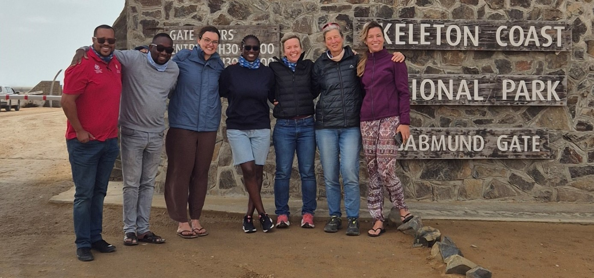
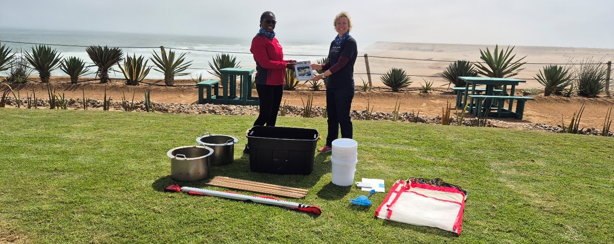
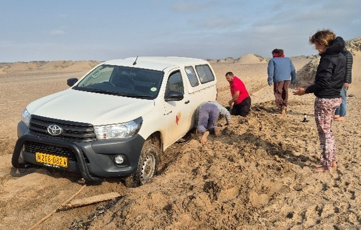
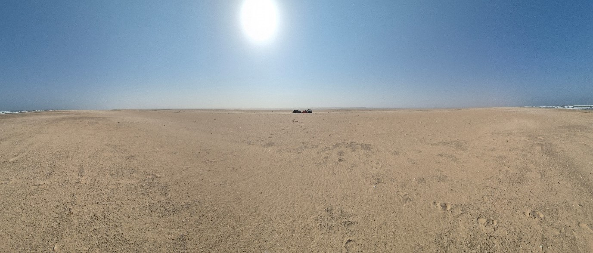
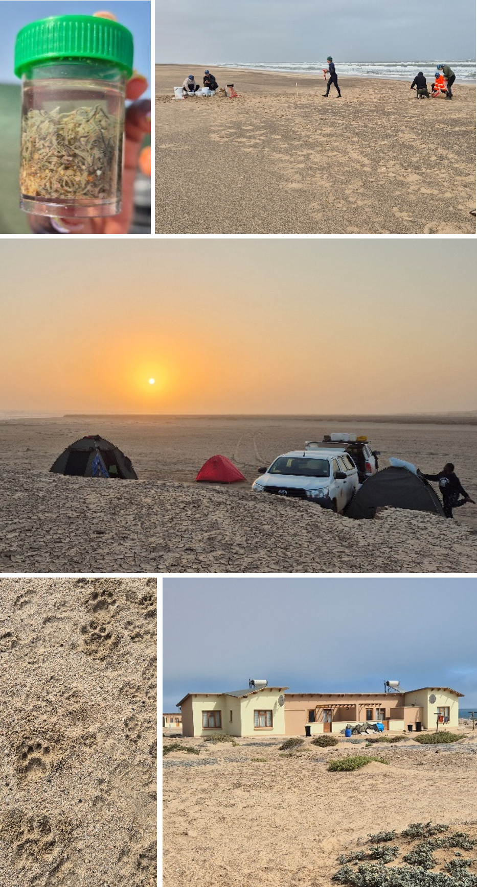
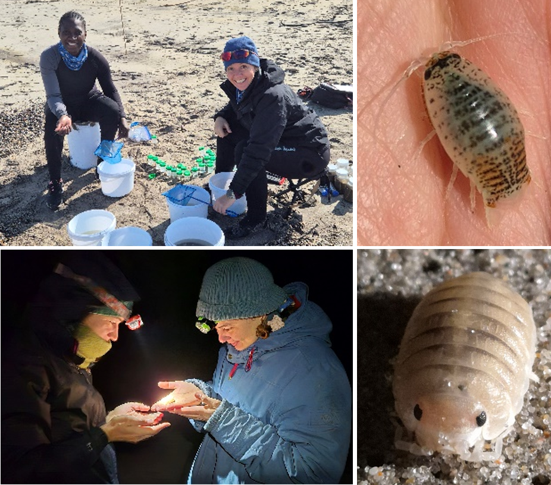
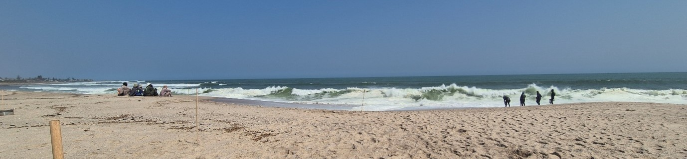
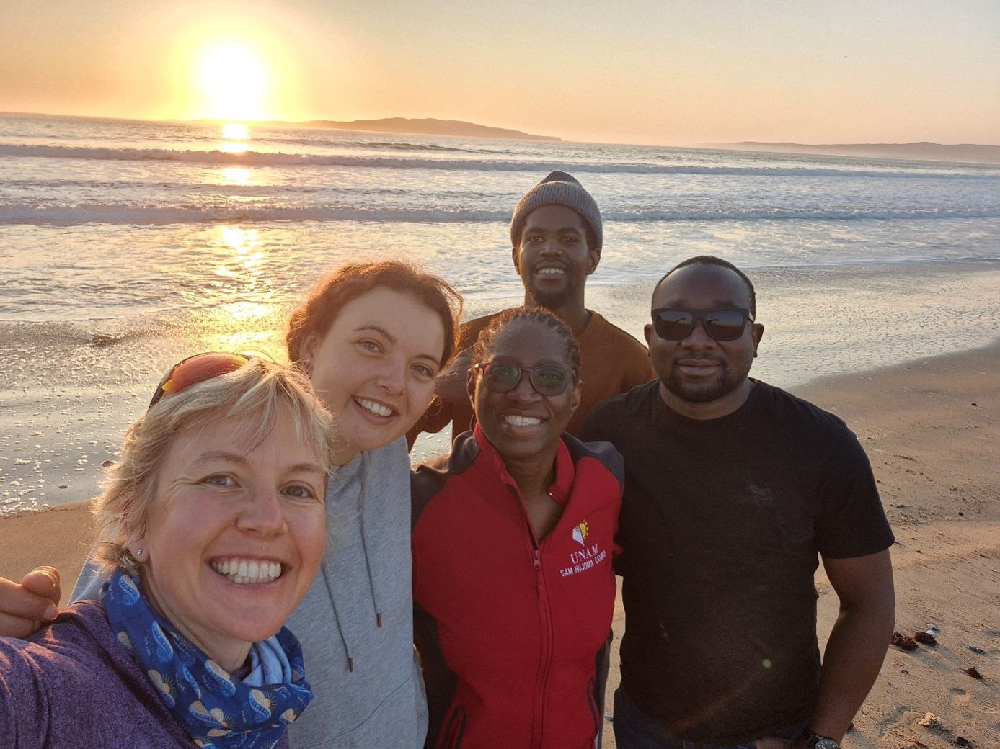
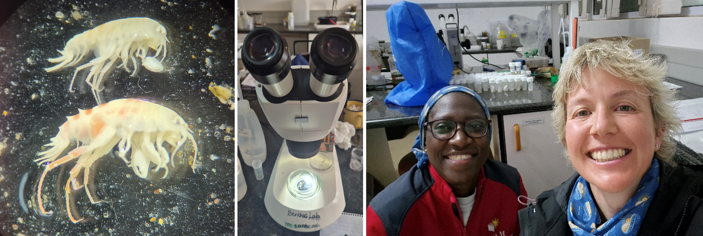
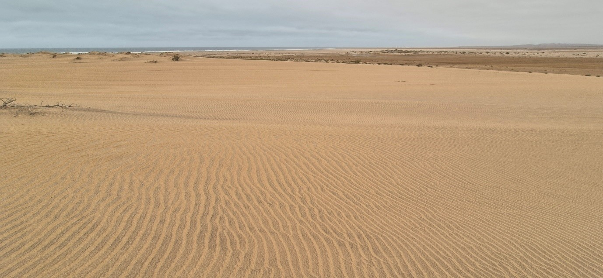

Namibia
Sampling desert beaches

The first field trip for Beaches for Life! that was outside of South Africa took place from 7-22 August 2026. Once we arrived at the Sam Nujoma Marine and Coastal Resources Research Centre (SANUMARC) in Henties Bay, it was a privilege to gift an equipment pack to the University of Namibia (UNAM) that includes everything needed to sample sandy shores. The pack also included a few supplies for the related laboratory work, and a copy of The Ecology of Sandy Shores book. We packed the equipment in two 4x4 bakkies, along with food, 200 L of water and more than 300 L of fuel, and set off northwards toward the Cunene River at the border with Angola.

It took us two days to drive to the northernmost site, camping at Moewe Bay as our half-way mark. It was an interesting introduction to the Skeleton Coast National Park because shortly after setting up camp, we had a visit from the Desert Lion Conservation team. They alerted us to the fact that there were lions in the area, a bit further south of where we were. They said the lions had never come as far north as where we were, and we were likely to be well out of harm’s way, but still needed to be careful. Just in case.

Happily, it was an uneventful stay, and we headed off for a second day of driving. We were aiming to get to Bosluisbaai, just a few kilometers south of the Angolan border, but we were delayed after we got the 4x4s stuck twice in wet sand and mud after miscalculating the route up the coast at Angra Fria. There are no roads to follow north of Moewe Bay, and with the windy conditions in the region, any previous vehicle tracks had long blown over.
We went as far north as we could but by 7:30 pm, we had to settle with where we were because we still had to set up camp and cook dinner over a fire. This mean we sampled at ‘Not Bosluisbaai’ - so named because the is no geographic name or nearby feature by which we could call the site. And ‘St Nowhere’ has already been taken as a place name in this part of the world.


Sampling Not Bosluisbaai was a challenge. Because we sample the intertidal beach, we have a window of about 2 h either side of the spring low tide in which we can work. This meant starting sampling in the dark before sunrise - definitely a first for all of us! We collected the samples and data, had lunch, packed up camp and headed to Hoarusib.
Hoarusib is named after the river that is largely underground but does periodically flood. There was evidence of relatively recent flooding, even though the riverbed was dry on the surface. By now, we had started settling into a rhythm. Set up camp, cook food, sleep, wake up before sunrise, make a fire for coffee, sample, have lunch, pack up camp, drive to the next site.
We went back to Moewe Bay, intending to camp at our original campsite. Only this time, it was absolutely covered in fresh lion tracks! To be honest, we were initially stuck somewhere between - this is so cool! and - this is really not safe! We went to check in with the local rangers, who kindly offered us an empty ranger house where we could spend the night.
We also checked in with the Desert Lion Conservation team to advise us regarding sampling the next day. They said they would accompany us, and recommended sampling as late after dawn as we could. We pushed sampling forward by an hour; any later and the transects would have been overrun by the tide and we couldn’t have collected the samples and data we needed.
(For those wondering, yes, none of us had showered since leaving Henties Bay. Although we were in formal accommodation with a shower, there was no water on site, so we stuck with a small bucket of fire-heated water and a cloth.)
When we went to pick up the Desert Lion Conservation team the next morning, they informed us that the lions had moved inland overnight and we would be fine sampling on the beach. It was a difficult beach to sample, with coarse sand and some gravel, but often it’s these atypical sites that provide interesting data!
We packed up camp and drove south to Toscanini - a historically mined site. It was fantastic to find pill bugs (also known as roly-polies), Tylos granulatus, on the beach at night. They are a nocturnal beach species that has been recently assessed as Endangered1.

We enjoyed a final night together around the fire, sampled the next day, and packed up camp for the last time. All of us savoured a shower at our accommodation back in civilisation that night. And although we missed camping out in the desert under the stars, sleeping in a real bed without sand everywhere was a treat.
Sampling urban beaches
It was a real change of pace sampling an urban beach at Swakopmund, where the intent was to pick up some contrasts with the pristine sites we’d been sampling in the Skeleton Coast National Park. The impacts were evident, with lots of sampling stations containing no animals. The surf was also wild, leaving us wondering if beach sampling could be classified as an extreme sport!

We then started the southern leg of the trip. We decided to drive around the dunes to get to Lüderitz rather than driving along the shore and squeezing in an extra site. The desert sand dunes are incredibly large in this region, and are pressed right up against the shore, creating challenging driving conditions. We over-nighted in Windhoek, and headed off to Lüderitz the next day.
We sampled Agate Beach in the northern part of Lüderitz. It was a valuable site to add because it is in a different bioregion to the northern sites. Sampling here allowed us to get some insights into the beach biogeographic patterns in Namibia, and provides the opportunity to make some comparisons with beaches in the same bioregion in South Africa. After sampling, we spent the night in Keetmanshoop, before heading back to Henties Bay the following day.

Identifying the animals we caught
With the fieldwork completed, we spent some time in the laboratory at SANUMARC. We did some training on sandy beach invertebrate classification, and worked on identifying the specimens we collected in the field. We made some interesting discoveries, finding new range limits for some species, and noting others that are likely undescribed species.

Next steps
The site data from the beaches we sampled are currently being compiled into a dataset that will inform the beach ecosystem classification and mapping (project objective 1). Although biodiversity is not an explicit objective in Beaches for Life!, it is essential capacity building for Namibia to advance sandy beach ecological research in future (project objective 4). We can also use the biodiversity information to validate some of the desktop-based analyses of ecological condition (project objective 2) and add any key information for the site prioritisation (project objective 3).
We have subsequently had a follow-up online training workshop on science writing with Namibia and South African students assisting in the project. Our findings on beach biodiversity in Namibia will be documented in a publication that we are currently working on, led by Mayday Haulofu, who will also present this work at the 10th International Sandy Beach Symposium in June 2027. We have started applying for funding to support some follow-up transboundary research, and it has also been wonderful to see the donated equipment being used in subsequent student practicals at UNAM.
We are grateful to the Pew Charitable Trusts for making this work possible.

Conservation impacts
Capacity building
Enduring connectivity
Footnotes
Read more about threatened beach invertebrates in southern Africa.↩︎